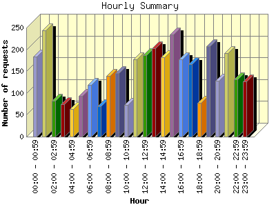
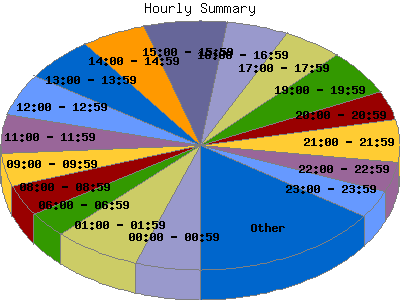

Report generated by Analog 5.91beta1 and Report Magic 2.21
|
Web Server Statistics for "Harish Narayanan (hnarayan) - May 2004" Report generated by Analog 5.91beta1 and Report Magic 2.21 |
The Hourly Summary identifies the level of activity broken down by each hour. Remember that one page hit can result in several server requests as the images for each page are loaded. This summary also compares the level of activity during working hours and after hours as a total for the report time frame.


| Hour | Number of requests | Number of bytes transferred | Percentage of the bytes | Percentage of the requests | |
|---|---|---|---|---|---|
| 1. | 00:00 - 00:59 | 183 | 4.350 MB | 5.29% | 5.26% |
| 2. | 01:00 - 01:59 | 244 | 3.977 MB | 4.84% | 7.02% |
| 3. | 02:00 - 02:59 | 83 | 2.510 MB | 3.06% | 2.39% |
| 4. | 03:00 - 03:59 | 75 | 1.956 MB | 2.38% | 2.16% |
| 5. | 04:00 - 04:59 | 63 | 1.284 MB | 1.56% | 1.81% |
| 6. | 05:00 - 05:59 | 93 | 1.163 MB | 1.42% | 2.67% |
| 7. | 06:00 - 06:59 | 118 | 3.606 MB | 4.39% | 3.40% |
| 8. | 07:00 - 07:59 | 69 | 1.938 MB | 2.36% | 1.99% |
| 9. | 08:00 - 08:59 | 139 | 1.732 MB | 2.11% | 4.00% |
| 10. | 09:00 - 09:59 | 146 | 2.734 MB | 3.33% | 4.20% |
| 11. | 10:00 - 10:59 | 73 | 3.952 MB | 4.81% | 2.10% |
| 12. | 11:00 - 11:59 | 177 | 3.281 MB | 4.00% | 5.09% |
| 13. | 12:00 - 12:59 | 187 | 2.831 MB | 3.45% | 5.38% |
| 14. | 13:00 - 13:59 | 203 | 3.189 MB | 3.88% | 5.84% |
| 15. | 14:00 - 14:59 | 182 | 4.735 MB | 5.76% | 5.24% |
| 16. | 15:00 - 15:59 | 234 | 9.887 MB | 12.04% | 6.73% |
| 17. | 16:00 - 16:59 | 177 | 3.943 MB | 4.80% | 5.09% |
| 18. | 17:00 - 17:59 | 166 | 3.295 MB | 4.01% | 4.78% |
| 19. | 18:00 - 18:59 | 77 | 1.383 MB | 1.68% | 2.21% |
| 20. | 19:00 - 19:59 | 208 | 5.403 MB | 6.58% | 5.98% |
| 21. | 20:00 - 20:59 | 128 | 2.678 MB | 3.26% | 3.68% |
| 22. | 21:00 - 21:59 | 192 | 6.715 MB | 8.18% | 5.52% |
| 23. | 22:00 - 22:59 | 132 | 3.844 MB | 4.68% | 3.80% |
| 24. | 23:00 - 23:59 | 127 | 1.758 MB | 2.14% | 3.65% |
| Work Hours (8:00am-4:59pm) | 1,518 | 36.284 MB | 44.17% | 43.67% | |
| After Hours (5:00pm-7:59am) | 1,958 | 45.859 MB | 55.83% | 56.33% | |
This report was generated on August 5, 2004 15:50.
Report time frame May 1, 2004 00:57 to May 31, 2004 23:07.
| Web statistics report produced by: | |
 Analog 5.91beta1 Analog 5.91beta1 |  Report Magic 2.21 Report Magic 2.21 |